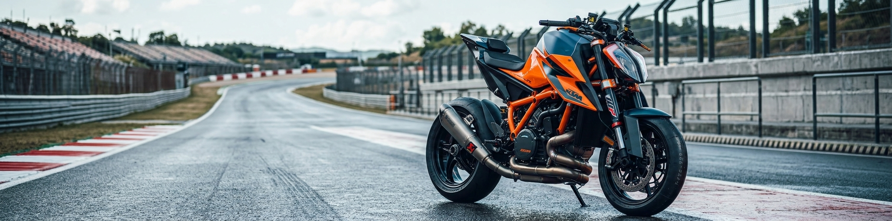
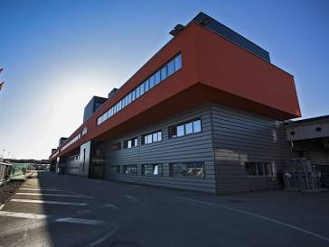
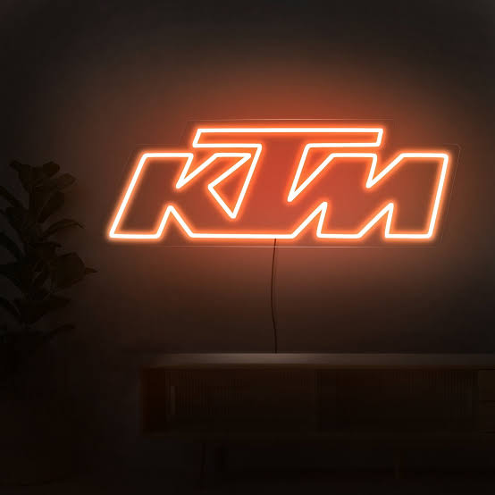
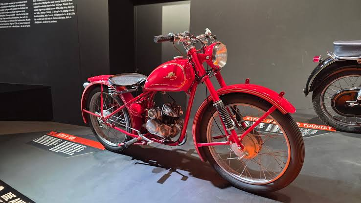
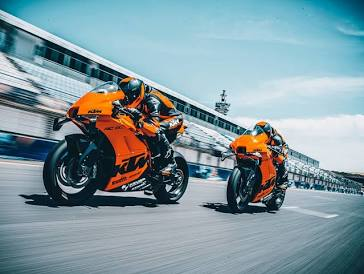
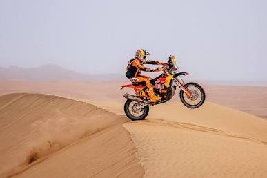
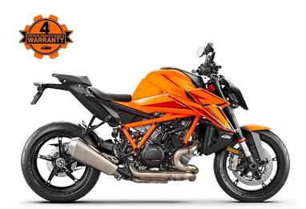

READY TO RACE
NEWS: Stay up to date with fresh stories, race weekends, and the latest updates from the riding world. From track action to off-road adventures, never miss a moment that matters.
MOTOBIKE: Dive into our lineup of raw machines, current models, and honest real-world tests. See what makes each bike tick on the street, on the track, and in the dirt.
PRODUCTS: Explore quality gear, performance parts, and everyday essentials built for serious riders. Everything you need to stay protected, comfortable, and ready for the next ride.
HISTORY: Discover the key milestones, iconic bikes, and deep roots that shaped our passion for riding. Take a look back at the moments and machines that brought us here today.
|
 1934 – Humble Beginnings in Austria:KTM didn't start out making motorcycles. In 1934, Austrian engineer Hans Trunkenpolz opened a small metalworking and car repair shop in Mattighofen called Kraftfahrzeug Trunkenpolz Mattighofen. |
 What "KTM" Actually Stands For:When businessman Ernst Kronreif became a major shareholder in 1953, the company was renamed Kronreif & Trunkenpolz Mattighofen—giving the brand the three iconic letters still used today. |
|
 1953 – The Very First Motorcycle:KTM built its first production motorcycle, the R100, in 1953. At the time, the entire factory had only 20 employees and rolled out just three bikes per day. |
 KTM Wasn't Always Orange:Early KTM bikes were painted red, blue, or white. The signature "KTM Orange" was only introduced in 1996, inspired by a race team's bold custom livery—and it quickly became one of the most recognizable colors in motorsport. |
|
 18 Consecutive Dakar Rally Wins:Between 2001 and 2019, KTM achieved an unmatched streak in off-road racing history by winning the grueling Dakar Rally 18 times in a row, proving their bikes could survive the toughest deserts on Earth. |
 Home of "The Beast":KTM’s flagship naked streetfighter, the 1390 SUPER DUKE R, produces 190 horsepower and 145 Nm of torque from its massive V-twin engine, earning its famous street nickname: "The Beast." |